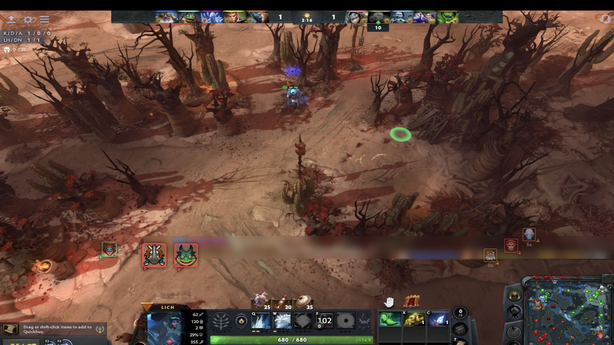

A free enemy radar for Dota 2 on macOS. All five enemy heroes sit on the edge of your screen: red when you can see them, amber where they were last seen, grey when the trail goes cold.
Using the zip instead? Unzip it, then right-click start.command → Open (macOS asks once because the app isn't from the App Store).
On Windows? Help me test it
Fogwatch runs on macOS today. I'm looking for Windows players to help bring it over. If you'd like to help, email me at imran.bug81@gmail.com.
Made for macOS
Open this page on a Mac to download. On Windows and want to help test a port? Email imran.bug81@gmail.com.

A real moment from a recorded game (2:16): two enemies in sight in red, three tracked in the fog in amber, a teammate in green. Drawn by Fogwatch from that moment's game state. Chat and names blurred.
Three colours, one glance
Fogwatch reads your minimap 10 times a second. Every enemy keeps one icon on your screen, pointing the way you'd have to look.
In sight
The icon pops onto the screen edge the moment they appear, bigger the closer they are.
Last seen
They walked into the fog. The arrow points to where you last saw them, with the seconds since.
Trail gone cold
Once they could be anywhere, the arrow fades into a ring and the icon steps back to a tray above your minimap.
Not a cheat. A memory.
Fogwatch can't see into the fog. It only remembers what your own screen already showed you, and works out how far a hero could have walked since.
Reads your own screen and Valve's official Game State Integration
Never reads game memory
Never presses a key or moves your mouse
Never changes game files (apart from the one data file Valve's integration needs)
Set up in three steps
Install with the Terminal line above (or the zip).
System Settings → Privacy & Security → Screen Recording: allow Terminal. Then play: the radar appears at the horn.
Optional AI coach: paste your own OpenAI, Jev or Anthropic key in the dashboard to add a game plan, advice and a post-game review. It's off by default, and with it off Fogwatch never makes a paid call.